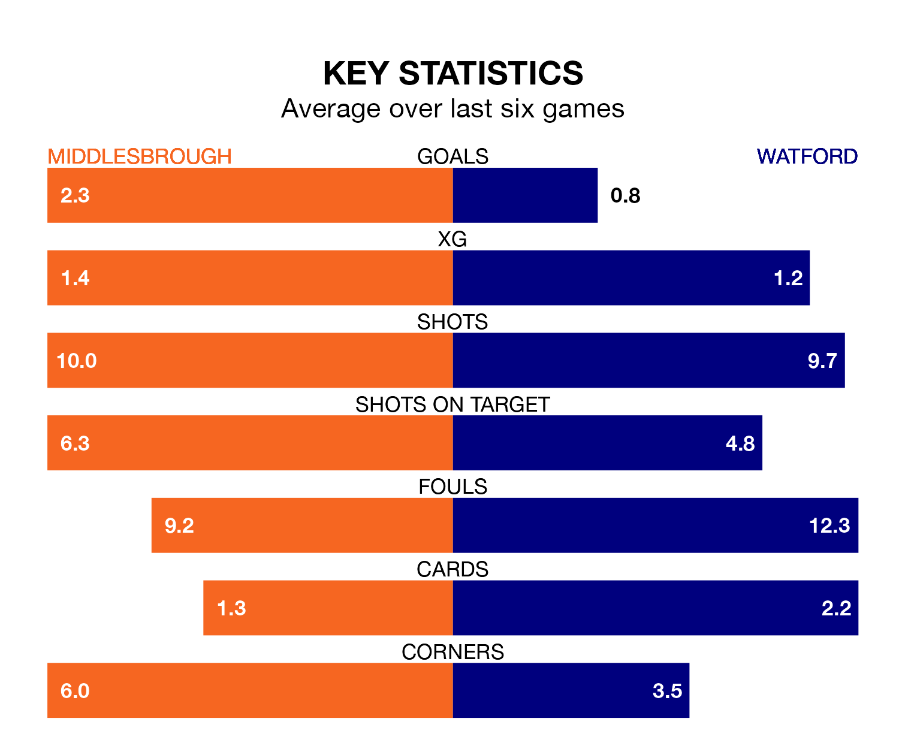

Middlesbrough host Watford on Saturday at the Riverside Stadium in EFL Championship.
In their last league match, on April 27, Middlesbrough beat Cardiff City 4-1 away, with goals from Alex Gilbert, Emmanuel Latte Lath, Finn Azaz and Matt Clarke.
Watford also won, 1-0 at home against Sunderland, with Ryan Andrews scoring their goals.
With 68 goals in 45 games so far this season, Middlesbrough are scoring more than average in the league with 1.5 goals per game. But they are conceding more than average too, letting in 61 goals at a rate of 1.4 per game.
Watford, meanwhile, are average scorers, with 1.3 goals per game. They have also conceded 1.3 goals per game.
In the last 10 years, Middlesbrough and Watford have played each other on nine occasions. Middlesbrough won two of them, Watford four, and they drew three times.
On average, the Boro scored 0.9 goals and the Hornets 1.1 in those matches.
Their last meeting was on September 30, when Middlesbrough won 3-2 away.
The Boro are eighth in the table after 45 games, of which they have won 19 and drawn nine, earning 66 points.
The Hornets are six places behind the home team in 14th, with 13 wins and 17 draws putting them on 56 points.
In Latte Lath, Middlesbrough have one of the league's most on-form strikers so far this season. He has notched 15 goals in 29 appearances, to sit seventh in the scoring charts.
His goal rate of one every 134 minutes is quicker than that of Mileta Rajovic, the visitors' top scorer with a goal every 179 minutes, and a total of 10 goals in 40 games.
Middlesbrough are in reasonable form in EFL Championship, with three wins and two draws from their last six games.
With a win and four draws over that period, Watford's form is worse – they have taken seven points from 18, compared to the Boro's 11.
Updated: 10:44 (UTC), 30/04/24